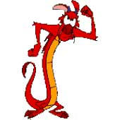

Forums galactiques > Taverne galactique : lieu de discussion informel > Au Soleil du Midi RESTAURANT
| black bird Réputation à la taverne : 772  09/12 ETU 19:42 | Score : 0 Détails "black bird arriva et entendit la proposition"
ah,quel bonheur mon repas préférer. enchanter de faire votre connaissance et merci pour ce repas! "la discution sembler bien parti,black bird commanda la boisson" voulez vous boire quelque chose? | ||
| black bird Réputation à la taverne : 772 09/12 ETU 19:45 | Score : 0 Détails "en voyant la non réaction de Mushu il vit du jus de tympan que Mushu avait commander"
euh...je me sens pas bien et ma grand mère m'attend a la maison...je dois vous quitter dslt!! | ||
| shaadeem Réputation à la taverne : 25  10/12 ETU 01:15 | Score : 0 Détails Après avoir salué tous le monde, le ramanah Shaadeem s'approcha du commandant Mushu et s'exprima en ces termes :
" - Je serais très heureux de déguster un plat (certes inconnu) avec vous cher commandant Mushu. Vos coutumes ne me sont pas familières mais j'aimerai bien en partager la saveur. Une telle invitation ne se refuse pas. Mon peuple aussi possède une culture assez spéciale pour cette galaxie… … … « Il sembla parler d’une sorte de célébration proche mais n’en discuta pas en détail car une forte douleur à l’estomac ( un abcès s’excusa t’il auprès du commandant Mushu) l’obligea à s’en aller en catastrophe ayant à peine la force de dire au revoir. » | ||
| Mushu Réputation à la taverne : 12  10/12 ETU 11:37 | Score : 0 Détails " Ah, cela me fait plaisir que vous vous adonniez à de nouvelles saveurs. Je comprends tout à fait que ce repas puisse être un peu difficile à digérer au début. Nous sommes tous passés par là..
Je serais heureux de faire plus ample connaissances avec vous, chers commandants." | ||
| Angely Réputation à la taverne : 380  10/12 ETU 12:16 | Score : 2 Détails Angely vit le petit dragon
Ah! Tiens, une allumette, j'en cherchais justement vu qu'il n'y a plus d'électricité pour allumer le gaz. Cette allumette grandeur géante pourra m'être bien utile!! Voyant que "l'allumette" se débattait, elle laissa sortir un cri de frayeur! Mais tu n'es pas un biblot allumeur de feux toi? T'es un vrai dragon? | ||
| Vyviane Réputation à la taverne : 11  24/01 ETU 16:09 | Score : 1 Détails Quelqu'un s'aprocha de la porte et entra.
C'était une jeune femme blonde, elle se dirigea près d'une table et s'assie elle regarda pars la fenêtre, comme si elle attendais quelqu'un... | ||
| black bird Réputation à la taverne : 772 24/01 ETU 16:12 | Score : 0 Détails "black bird s'avança et vit une jeune commandante assise la,toute seul...
il ne put s'empécher de s'installer..." bonjour commandante, étes vous nouvelle? dans tous les cas,bienvenue parmis nous! garçon ! 2 coca s'il vous plait! black bird attendit la commande,et attendit aussi la réponse de Vyvianne.. | ||
| Vyviane Réputation à la taverne : 11 24/01 ETU 19:36 | Score : 0 Détails Bonjour.
Je m'appele Vyviane et je suis nouvelle , c'est exacte, en fait je suis dirigeante. Et vous? | ||
| Angely Réputation à la taverne : 380 17/02 ETU 14:09 | Score : 0 Détails (Luna)
Le restaurant est toujours ouvert! Venez vous y délecter! Ne pas voter à la succession de mes ups, je compte reouvrir un peu les bars et autres... | ||
| Général Kija Réputation à la taverne : 48  22/02 ETU 17:21 | Score : 1 Détails Un jeune homme entra dans le restaurant et commanda quelque chose . Il ne savait pas pourquoi il était la , mais il était bien dans ce restaurant apparemment il attendait quelqu'un . Il voulait savoir avec un des serveurs si une jeune femme blonde était venu c'est dernier jour . Le serveur lui répondit que oui . Alors il demanda au serveur si la jeune femme était toute seule , et le serveur lui a répondu que oui durant un moment mais juste aprés il y a monsieur qui et venu la voir . Le jeune homme lui remercia en lui donnant un géneureux pourboir mais il paraissait un peut déçu de la réponse du serveur . Quand il fini sont plat il sorti du retaurant en laissant un mot pour la jeune femme blonde au serveur en lui demandant de lui remettre si elle revient , le petit mot disait que le Général Kija lui envera un MP ce week-end pour lui demander quelque chose . Puis il reparti avec le sourire mais il paraissait bien triste quand même .
| ||
| Brice&Tom Réputation à la taverne : 20  22/02 ETU 17:37 | Score : 2 Détails Les deux compères entrèrent en poussant chacun un battant de la double porte.
Brice s’écria: "Manger !", en courant vers la table la plus proche, la bave ruisselant sur son visage poilus. Tom, silencieux depuis les péripéties précédentes, s’assit à la table et regarda, intrigué, cette chose métallique comportant quatre dents. Il pensa à un moyen de se gratter... |
Forums galactiques > Taverne galactique : lieu de discussion informel > Au Soleil du Midi RESTAURANT